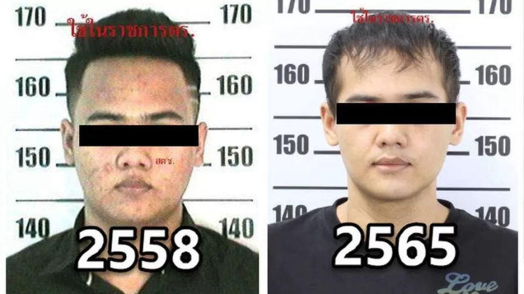
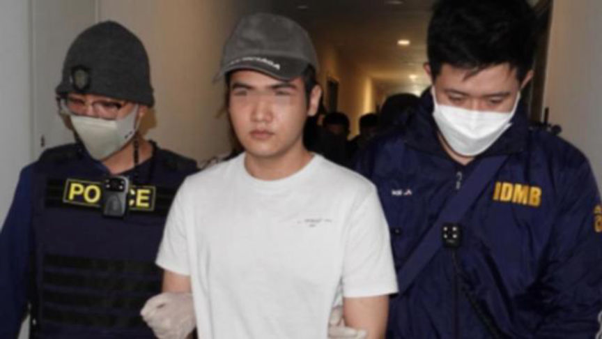
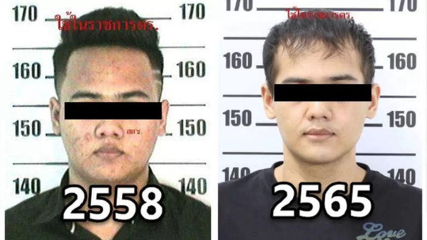
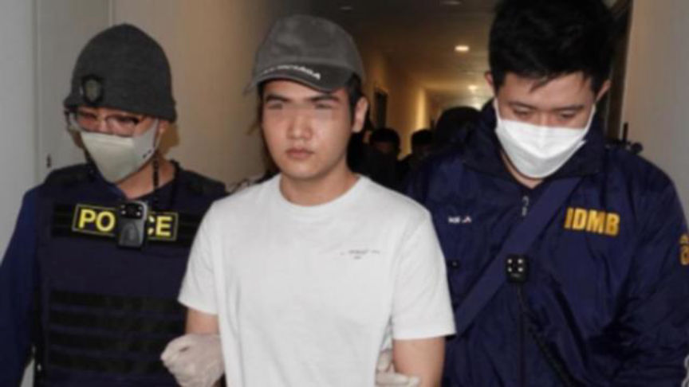

Drug Dealer had Platic Surgery to Avoid Arrest
Authorities in Thailand arrested a man accused of changing his appearance through plastic surgery to escape arrest for importing and reselling drugs purchased through the dark web.

According to media reports, 25-year-old Sarahat Sawangjaeng of Bangkok was wanted under an arrest warrant for importing large quantities of MDMA into Thailand. Sarahat managed to escape arrest for close to three months thanks to facial plastic surgeries that left no "original outlines."
On November 11, 2022, Thai customs officers intercepted an incoming package that carried approximately 2.5 kilograms of MDMA and 290 ecstasy pills hidden in a jigsaw puzzle box. The Police were reportedly able to link the drug package to Sarahat. The police acquired an arrest warrant against him on December 2, 2022.
Unable to find Sarahat, the police decided to launch an undercover operation. The operation was aimed at getting to the source of ecstasy sold to users and resellers in Bangkok. Information acquired in the course of the investigations led the police to a South Korean man named Jimin Seong.
On February 23, 2023, the police executed a search warrant on the suspect's residence, a condominium in Bangkok. The search resulted in the seizure of two telephones and other assets.

On being questioned, the suspect told the police that he had undergone extensive plastic surgery and changed to a Korean name because he wanted to move to South Korea, even though he does not speak Korean.
He also admitted he imported large quantities of MDMA purchased from dark web drug vendors on multiple dark web marketplaces. He allegedly preferred Dutch vendors.
Sarahat was charged with illegal importation and distribution of MDMA.

Sarahat Sawangjaeng before and after the surgeries
According to media reports, 25-year-old Sarahat Sawangjaeng of Bangkok was wanted under an arrest warrant for importing large quantities of MDMA into Thailand. Sarahat managed to escape arrest for close to three months thanks to facial plastic surgeries that left no "original outlines."
On November 11, 2022, Thai customs officers intercepted an incoming package that carried approximately 2.5 kilograms of MDMA and 290 ecstasy pills hidden in a jigsaw puzzle box. The Police were reportedly able to link the drug package to Sarahat. The police acquired an arrest warrant against him on December 2, 2022.
Unable to find Sarahat, the police decided to launch an undercover operation. The operation was aimed at getting to the source of ecstasy sold to users and resellers in Bangkok. Information acquired in the course of the investigations led the police to a South Korean man named Jimin Seong.
On February 23, 2023, the police executed a search warrant on the suspect's residence, a condominium in Bangkok. The search resulted in the seizure of two telephones and other assets.

Sarahat Sawangjaeng being arrested
On being questioned, the suspect told the police that he had undergone extensive plastic surgery and changed to a Korean name because he wanted to move to South Korea, even though he does not speak Korean.
He also admitted he imported large quantities of MDMA purchased from dark web drug vendors on multiple dark web marketplaces. He allegedly preferred Dutch vendors.
Quote:Police Major General Teeradet Thammasutee, chief of the Royal Thai Police
He is a drug lord importing MDMA from Europe at just 25 years old. We believe there are more suspects in foreign countries. We will continue our investigation.
Sarahat was charged with illegal importation and distribution of MDMA.